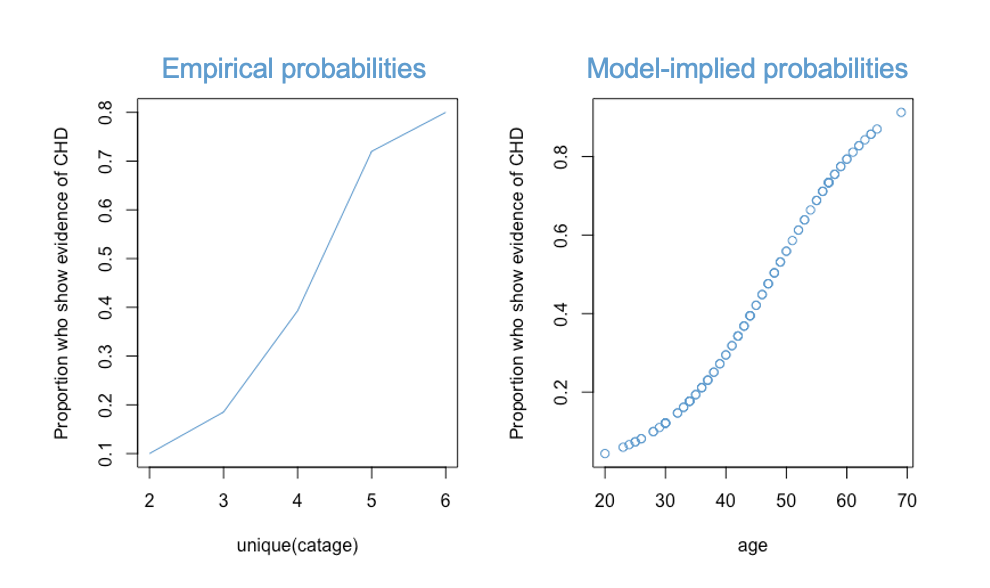
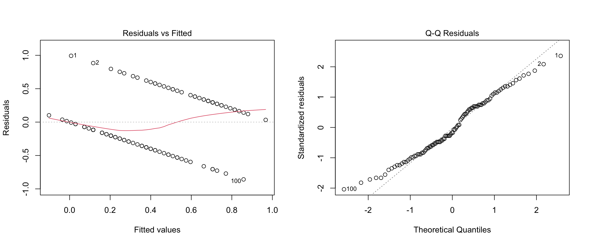
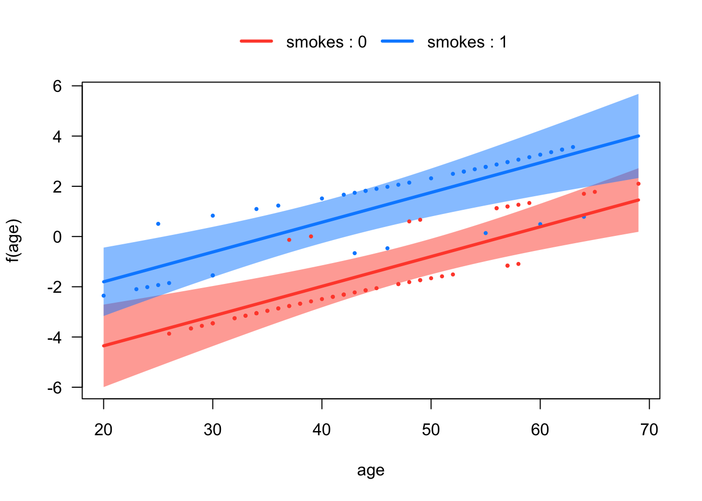
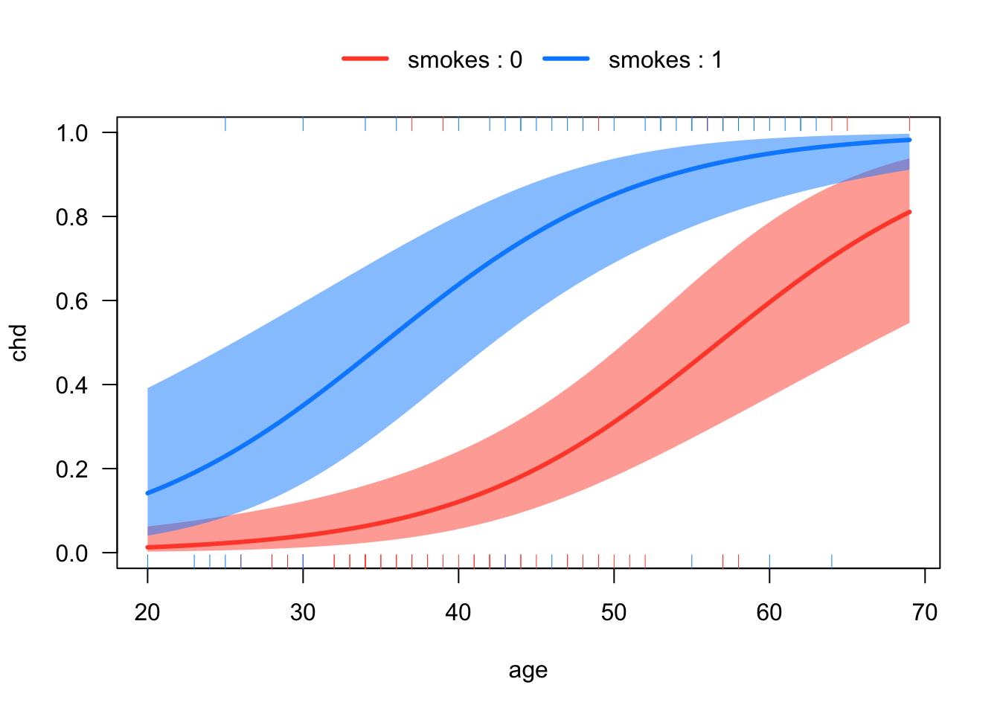
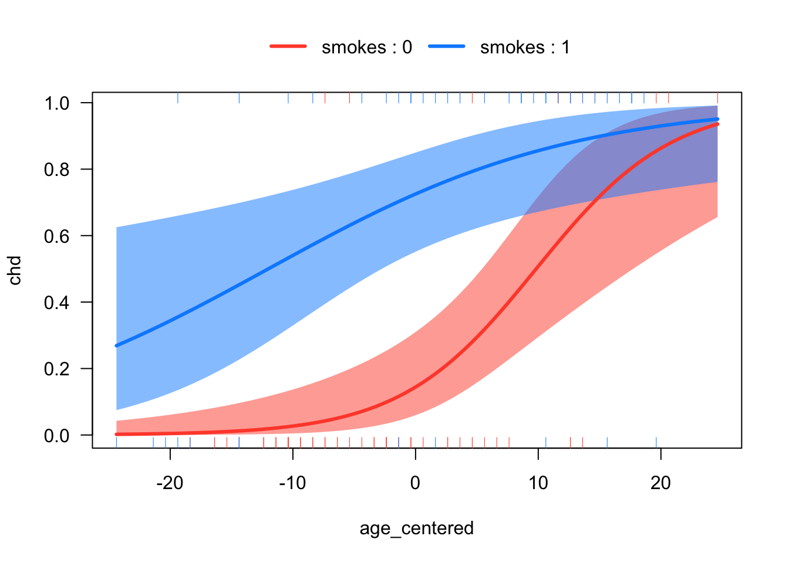

Code
load("CHD.RData")
attach(chd.data)
knitr::kable(list(chd.data[sample(1:100, 10),2:3],
chd.data[sample(1:100, 10),2:3]),
row.names = F,
caption = "The CHD example")
|
|
The topic we address in this chapter is logistic regression. Like the previous two chapters, logistic regression is an extension of multiple linear regression to situations in which the “standard” model does not directly apply. This time, the extension is to binary outcome variables.
There are many situations in which the outcome of interest can be thought of as a binary or “yes / no” or “true / false” outcome:
Just like with linear regression, we often we want to relate these types of binary variables to predictors, such as medical history, family background, personal characteristics, etc. That is what logistic regression does.
The main theme of this chapter is also an extension of the previous two chapters. We have seen a general strategy for how to deal with data that do not “fit” the assumptions of linear regression:
We will see this basic approach again in this chapter. In fact, its kind of a general-purpose hack for quantitative research – when you are faced with a problem you don’t know how to deal with, turn it into something you do know how to deal with. Certainly this is not the most creative approach, but it has the advantage of letting us “port over” many of the tools we have developed in one context (regression with a continuous outcome) into a new context (regression with a binary outcome).
In terms of statistical modeling, the move to binary outcome variables is a pretty big deal. Everything we have done up until now has focused on OLS regression, using the same basic principles we discussed in Chapters Chapter 2 and Chapter 3. However, logistic regression takes us into the wider framework of generalized linear models (GLMs), which are estimated using maximum likelihood (ML) rather than OLS. Thus we will need to start at the “ground floor” to build up our knowledge of logistic regression, which then provides a stepping stone to GLMs, which can additionally handle other types of outcome variables (e.g., count data, ordered categorical data).
Since we are starting with a new modeling approach, let’s kick things off with a new example.
As a working example, we will use data contained in the file CHD.RData to explore the relationship between age in years (“age”) and evidence (absence or presence) of coronary heart disease (“chd”). The data set contains 100 cases. Respondents’ ages range from 20 to 69, while clinical evidence of CHD is coded 0 when it is absent and 1 when it is present. A sample of 20 cases is shown below. (Source: Applied Logistic Regression by David W. Hosmer and Stanley Lemeshow, 1989, John Wiley and Sons.)
For the sake of brevity, I will say that a person either “has CHD” or not. This is less accurate (but much simpler) than saying that the variable denotes clinical evidence about the presence or absence of CHD.
load("CHD.RData")
attach(chd.data)
knitr::kable(list(chd.data[sample(1:100, 10),2:3],
chd.data[sample(1:100, 10),2:3]),
row.names = F,
caption = "The CHD example")
|
|
If we regress CHD on age using linear regression, this is referred to as the “linear probability model.” The diagnostic plots and summary output are below:
Call:
lm(formula = chd ~ age, data = chd.data)
Residuals:
Min 1Q Median 3Q Max
-0.85793 -0.33992 -0.07274 0.31656 0.99269
Coefficients:
Estimate Std. Error t value Pr(>|t|)
(Intercept) -0.537960 0.168809 -3.187 0.00193 **
age 0.021811 0.003679 5.929 4.57e-08 ***
---
Signif. codes: 0 '***' 0.001 '**' 0.01 '*' 0.05 '.' 0.1 ' ' 1
Residual standard error: 0.429 on 98 degrees of freedom
Multiple R-squared: 0.264, Adjusted R-squared: 0.2565
F-statistic: 35.15 on 1 and 98 DF, p-value: 4.575e-08
Before moving on, please take a moment to write down you conclusions (and rationale) about whether the assumptions of linear regression are met for these data.
I’ll note that researchers who have a strong preference for OLS methods (AKA economists) often approach binary outcomes using the linear probability model. As we can see, this approach violates all of the assumptions of linear regression, can lead to predicted probabilities outside of the range [0,1], produces incorrect standard errors for model parameters (need to use HC standard errors), and is, in a word, wrong. Yet, despite all this, it works pretty well in some situations and has the benefit of being easier to interpret than logistic regression. We will consider the situations in which the linear probability model is “close enough” at the end of the next section.
The general game plan for dealing with a binary outcome is to transform it into a different variable that is easier to work with, run the analysis, and then “reverse-transform” the model coefficients so that they are interpretable in terms of the original binary variable. This strategy should sound familiar from Chapter 8 – it’s the same overall approach we used for log-linear regression. Also in common with Chapter 8, we are going to use logs and exponents as the main workhorse for this approach (that is where the “log” in logistic comes from).
However, the overall strategy for transforming the \(Y\) variable in logistic regression is a bit more complicated than the log-linear model. So, it is helpful to start wit an overall “roadmap”.
Step 1 (from binary to probability). First, we are going to work with probabilities rather than the original binary variable. In terms of our example, we are going to shift focus from whether or not a person has CHD to the probability of a person having CHD.
Step 2 (from probability to logistic). The logistic function is widely-used model for probabilities. In terms of our example, we are going to use the logistic function to relate the probability of a person having CHD to their age.
Step 3 (from logistic to logit). The logistic function has a nice interpretation, but it is not a linear function of age. So, we are going to transform it into something that is linear in age, which will let us “port over” a lot of what we have learned about linear models. Actually, the reason we choose the logistic function as a model of probability is because this transform is relatively straightforward and can be “undone” afterwards when interpreting the model coefficients, just like with log-linear regression. The transformation two steps:
Step3A (probability to odds). First we transform the probability of having CHD into the odds of having CHD. If \(p\) denotes probability then odds are just \(p / (1-p)\). We will spend a while talking about how to interpret odds.
Step 3B (odds to logit). Then we take the log of the odds, which is called the logit. The logit turns out to be a linear function of age, so we can model the relationship between age and the logit of CHD in a way that is very similar to regular linear regression.
So, that’s the overall approach to dealing with a binary variable in logistic regression. Clear as mud, right? Don’t worry, we will walk through each step in the following subsections. If you find yourself getting lost in the details, it can be helpful to refer back to this overall strategy. In short, the overall game plan is:
\[ \text{binary outcome} \rightarrow \text{probability} \rightarrow \text{logistic} \rightarrow \text{logit (log odds) }\]
Once we have all these concepts in play, we can start doing logistic regression.
The following table presents the example data in terms of the proportion of cases with CHD, broken down by age groups. The first column shows the age groups, the second shows the number of cases without CHD, the third shows the number of cases with CHD, and the last column shows the proportion of cases with CHD.
knitr::include_graphics("files/images/props.png")
Recall that a proportion is computed as the number of cases of interest over the total number of cases. In terms of the table above:
\[ p(CHD = 1) = \frac{ N_1}{N_0 + N_1 } \tag{10.1}\]
were \(N_1\) denotes the number of cases with CDH, and \(N_0\) is the number of cases without.
The number \(p(CHD = 1)\) can be interpreted in many ways, which leads to a lot of terminology here.
You might hear all of these terms (i.e., proportion, percentage, rate, mean, probability) used in connection with logistic regression. But, they are all just different ways of interpreting the rightmost column of Figure 10.2. I will try to make a point of using all of these terms so you get used to interpreting them in this context :)
Another concept that will be useful for interpreting our data is odds. Odds are closely related to, but not the same as, probability. The figure below adds the odds of having CHD to Figure Figure 10.2.
knitr::include_graphics("files/images/odds.png")
As shown in the table, the odds are also a function of the two sample sizes, \(N_1\) and \(N_0\):
\[\text{odds}(CHD = 1) = \frac{N_1}{N_0}. \tag{10.2}\]
Let’s take a moment to compare the interpretation of probability versus odds.
The first row of the table tells us that the probability of having CHD in your 20’s is “1 in 10”. Loosely, this means that for every 10 people in their 20s, one of them will have CHD.
By contrast, the odds of having CHD in your twenties is “1 to 9”. Roughly, this means that for every person in their twenties with CHD, there are nine without CHD.
Clearly, probabilities and odds are just two different ways of packaging the same information. The following equations shows the relation between odds and probability (these are derived from Equations Equation 10.1 and Equation 10.2 using algebra)
\[ \begin{align} p(CHD = 1) & = \frac{\text{odds}(CHD = 1)}{1 + \text{odds}(CHD = 1)} \\ \\ \text{odds}(CHD = 1) & = \frac{p(CHD = 1)}{1 - p(CHD = 1)} \end{align} \tag{10.3}\]
We will see these relations again shortly. But, before moving on, let’s get some more practice interpreting odds and probabilities using the data in Figure 10.3. Please write down your answers to the following questions and be prepared to share them in class. For each question provide a verbal interpretation of the numerical answer (e.g, odds of 2 to 1 means that for every two people with a trait, there is one without.)
The answers hidden below (use the Code button to reveal), but you won’t learn anything if you don’t try the question yourself first!
# 1. .39, so about 40% of people
# 2. 11/17, so for 11 people with CHD there are 17 without
# 3. 1 - .72 = .28, so about 28% of people
# 4. (18/7)^-1 = 7/18, so 7 out ever 18 people
# 5. .39 / .19 ~= 2, so the probability of having CHD in your 40s is about 2 times higher than the probability of having CHD in your 30s. This is called a relative risk, or a risk ratio.
#6. (11/17)/(5/22) ~= 2.8, so the odds of having CHD in your 40s is about 2.8 times higher than the odds of having CHD in your 30s. This is called an odds ratio. On thing you may have noted about the CHD data is that the proportion of cases with CHD increases with age. This relationship is shown visually in Figure 10.4.
# Sample proportions
prop <- tapply(chd, catage, mean)
# Age categories
years <- unique(catage)*10
# Plot
plot(years,
prop,
type = "l",
lwd = 2,
col = "#4B9CD3",
ylab = "p(CHD =1)",
xlab = "Age categories")
Looking at the plot, we might suspect that the relationship between the probability of CHD and age is non-linear. In particular, we know that probabilities cannot take on values outside of the range \((0, 1)\), so the relationship is going to have to “flatten out” in the tails. For example, even if you are a baby, your probability of having CHD cannot be less than 0. And, even if you are centenarian, the probability can’t be great than 1.
Based on this reasoning, we know that the relationship between age and the rate of CHD should take on a sort of “S-shaped” curve or “sigmoid”. This S-shape is hinted at in Figure 10.4 but is not very clear. Some clearer examples are shown in Figure 10.5.
# Logistic function
logistic <- function(x, a, b){exp(a*x + b) / (1 + exp(a*x + b))}
# Generate data
x <- seq(-5, 5, by = .1)
# Plots
plot(x, logistic(x, 1, 0),
type = "l",
lwd = 2,
col = 2,
ylab = "logistic")
points(x, logistic(x, .75, -1.5),
type = "l",
lwd = 2,
col = 3,
ylab = "logistic")
points(x, logistic(x, 1.5,- 1),
type = "l",
lwd = 2,
col = 4,
ylab = "logistic")
points(x, logistic(x, 3, 2),
type = "l",
lwd = 2,
col = 5,
ylab = "logistic")
The mathematical equation used to create these S-shaped curves is called the logistic function, the namesake of logistic regression. All you need to take-away from Figure 10.5 is that there is mathematical function that produces the kind of relations we are expecting between age (continuous) the the probability of having CHD (bounded to the interval \((0, 1)\)).
Returning to our example, we can see in Figure 10.6 that the logistic function provides a reasonable approximation for the relationship between the rate of CHD and age.
par(mfrow = c(1, 2))
plot(years, prop, type = "l", lwd = 2, col = "#4B9CD3", ylab = "p(CHD =1)", xlab = "Age categories")
plot(20:60, logistic(20:60, .12, -5.2), col = "#4B9CD3", ylab = "logistic", xlab = "Age in years")
One important thing to notice about Figure 10.6 is that the plot on the left required re-coding age into a categorical variable and computing the proportion of cases with CHD in each age category (see Figure 10.2). However, the logistic plot on the right did not require categorizing age. So, one advantage of using the logistic function is that we can model the probability of CHD as a function of age “directly”, without having to categorize our predictor variables.
The take home message of this section is that the logistic function is a nice way to model how a proportion depends on a continuous variable like age. Next, we’ll talk about the math of the logistic function in a bit more detail.
The formula for the logistic function (i.e., the function that produced the curves in Figure 10.5 is
\[p = \frac{\exp(x)}{1 + \exp(x)}. \tag{10.4}\]
This function maps the variable \(x\) onto the interval \((0, 1)\). In Figure 10.6 we saw that the logistic function can provide a nice model for probabilities. We also saw that the logistic function is non-linear function of \(x\) (i.e., it is sigmoidal or S-shaped).
However, a nice thing about the logistic function is that we can transform it into a linear function of \(x\). Since we already know how to deal with linear functions (that is what this whole course has been about!), transforming the logistic into a linear function of \(x\) will let us port over a lot of what we know about linear regression to situations in which the outcome variable is binary. (In fact, the real motivation for choosing the logistic function in the first place, rather than some other S-shaped curve.)
So, let’s see how to get from our S-shaped logistic function of \(x\) to a linear function of \(x\). Algebra with Equation 10.4 shows that we can re-express the logistic function in terms of the odds:
\[\frac{p}{1- p} = \exp(x). \tag{10.5}\]
Note that Equations Equation 10.4 and Equation 10.5 directly parallel the two expressions in Equation Equation 10.3. The only difference is that, in the logistic model, the odds are represented as an exponential function of the variable \(x\), which is what Equation Equation 10.5 is telling us.
In order to turn Equation 10.5 into a linear function of \(x\), all we need to do is get rid of the exponent. Do you remember how?? That’s right, just take the log (see Section 8.1):
\[ \log\left(\frac{p}{1- p}\right) = x. \tag{10.6}\]
This equation is telling us that the log of the odds is linear in \(x\). The log-odds is also called the logit, which is short for “logistic unit.”
The relationship among the logistic, odds, and logit are summarized in Figure 10.7.
knitr::include_graphics("files/images/logit.png")
The left-hand panel shows the logistic function. This is our “intuitive-but-nonlinear” model for probabilities. In terms of our example, this panel is saying that the probability of having CHD is a logistic or S-shaped function of age.
The middle panel shows that the odds are an exponential function of \(x\). In terms of our example, this means that the odds of having CHD are an exponential function of age. This is the main assumption of the logistic model, and we will revisit this assumption again when we get to Section 10.7.
Finally, the right-hand panel shows the “not-really-intuitive-but-definitely-linear” model for the logit. In terms of our example, the logit of having CHD is a linear function of age.
The next section discusses how to interpret the logit by reverse-transforming it back to the odds and probabilities. The situation is a lot like log-linear regression (Chapter 9).
Before moving, lets nail down the relation between probability, odds, and logits. Figure 10.8) presents the relationship in tabular form.

I will asks some questions along the following lines in class.
The logit is our workhorse for logistic regression. In Section 10.3, we will replace the variable \(x\) with a simple regression model \(a + bX\) to get simple logistic regression. In ?sec-multiple-10 we will extend simple logistic regression to multiple logistic regression, just like we did for multiple linear regression.
Although the logit is the workhorse, we generally don’t want to work with the logit when it comes time to interpret the results. The situation here is a lot like log-linear regression (Chapter 9). In log-linear regression, we treated \(\log(Y)\) as a linear function of our predictor variable(s). However, we didn’t want to interpret the model in terms of \(\log(Y)\), because, well, who thinks in log units? Instead we wanted an interpretation in terms of the original outcome, \(Y\).
The same situation applies here. You may have already noted that the relationship between the logit (i.e., \(\log(\text{odds})\)) and \(\text{odds}\) in logistic regression is the same as the relationship between \(\log(Y)\) and \(Y\) in log-linear regression. The parallel between the two model is as follows:
In the log-linear model we interpreted a \(b\) unit increase in \(\log(Y)\) in terms of an \((\exp(b) - 1) \times 100\%\) change in \(Y\) (see Section (ref-interpretation-8?))).
In logistic regression we will interpret a \(b\) unit increase in \(\text{logit}(Y)\) in terms of an \((\exp(b) - 1) \times 100\%\) times change in \(\text{odds}(Y)\).
So, while we use the logit function for modeling, we often use the odds for interpretation. One subtle difference to be aware of is that, in logistic regression, we usually report results in terms of relative magnitude (called the odds ratio) rather than relative change, although relative change is often used for verbal reporting. We will see examples in the next section.
Some authors have argued that people don’t really know how to interpret odds properly. These authors suggest that we interpret the logistic model in terms of probabilities, rather than odds. We will discuss how to do this as well.
At this point we have covered the overall logic of how we can model a binary outcome variable like CHD in terms of the logistic function. The overall situation is very similar to, but a bit more complicated than, log-linear regression. The main take aways are
We use the logit (log-odds) for statistical analysis, because it results in a linear function, and we already know how to deal with linear functions.
We use the odds for interpretation, because the logistic model leads to proportional change in the odds, in the same way that the log-linear model leads to proportional change in \(Y\).
We can also use probabilities for interpretation, but, since the logistic model implies that probabilities are non-linear (sigmoidal), things can get a bit complicated with this approach.
In this section we move onto logistic regression proper. For the CHD example, the model we are interested in is
\[\text{logit}(CHD) = a + b (\text{age}). \]
We are going to skip a few steps and go right into the interpretation of the R output. Once we know how to interpret the output, we will loop back to discuss details of estimation and inference in the following sections.
The summary R output for the example is below. The focus for now is just the interpretation of the values under the “Estimate” heading.
mod2 <- glm(chd ~ age, family = binomial, data = chd.data)
summary(mod2)
Call:
glm(formula = chd ~ age, family = binomial, data = chd.data)
Coefficients:
Estimate Std. Error z value Pr(>|z|)
(Intercept) -5.30945 1.13365 -4.683 2.82e-06 ***
age 0.11092 0.02406 4.610 4.02e-06 ***
---
Signif. codes: 0 '***' 0.001 '**' 0.01 '*' 0.05 '.' 0.1 ' ' 1
(Dispersion parameter for binomial family taken to be 1)
Null deviance: 136.66 on 99 degrees of freedom
Residual deviance: 107.35 on 98 degrees of freedom
AIC: 111.35
Number of Fisher Scoring iterations: 4Plugging the estimates into our logit model, we have the following equation
\[ \text{logit}(CHD) = -5.31 + .11 (\text{age}). \]
The “literal” interpretation of this equation is:
While this interpretation is perfectly correct, most applied audiences are not going to know how to interpret \(\text{logit}(CHD)\). So, instead, we often work with the odds and probabilities, as outlined in the next few sections.
The logistic regression model implies
\[\frac{\text{odds} (X+1)}{\text{odds}(X)} = \exp(b) \tag{10.7}\]
where \(\text{odds}(X)\) are the odds of the outcome associated with a given value of the predictor \(X\). Equation Equation 10.7 is called the odds ratio (abbreviated OR) associated with a one-unit increase in \(X\).
If you refer back to section Section 8.5.5, you can see we are using the exact same approach from log-linear regression, but in Equation 10.7 we interpret the regression coefficient in term of the odds that \(Y = 1\), rather than the \(Y\) variable itself.
For the CHD example, the OR is:
\[\exp(b) = \exp(.11) = 1.1163 \]
This means that each additional year of age is associated with an OR of 1.11. For example, the odds for someone aged 21 having CHD is 1.11 time larger (relative magnitude) that someone aged 20. The really useful thing about the OR is that it is constant over values of the predictor. So, regardless of whether we are comparing a 21-year-old to a 20-year-old, or 41-year-old to a 40-year-old, the OR is the same.
Just like the log-linear model, we can also report the results of our analysis in terms of relative change rather than relative magnitude. In particular, the percent increase in the odds of CHD associated with each additional year of age is:
\[(\exp(.11) - 1) \times 100 = 11.63\% \]
This means that the predicted odds of CHD increase 11.63% for each additional year of age.
Whether you use relative magnitude (i.e., the odds ratio) or relative change (i.e., percent change in odds) to report the results of logistic regression is up to you. In many fields, it is conventional to reports the odds ratios in tables, but to use percent change when writing about results in a sentence.
Before moving, please practice your interpretation of the OR in simple logistic regression using the following examples
Answers hidden below (use Code button), but please try out the questions yourself first!
# 1. OR = exp(0) = 1 and percent change equals (exp(0) - 1) X 100 = 0%. So, "no relationship" means OR = 1.
# 2. OR = exp(.25) = 1.2840 and percent change equals (exp(.25) - 1) X 100 = 28.40% increase
# 3. OR = exp(-.025) = 0.9753 and percent change for one unit equals (exp(-.025) - 1) X 100 = (-.02469 X 100 = -2.469%. For 10 units of change, multiply by 10, which gives 24.69% decrease (negative sign is decrease).
# 4. (exp(b) - 1) X 100 = 100 --> exp(b) = 2 --> b = log(2) = .6931Another way to interpret the logistic model is in terms of the predicted probabilities, which are plotted below for the example data.
visreg::visreg(mod2, xvar = "age", scale = "response")
Using this plot, we can read off the probability of CHD for any given age. We might also want to report the probability of CHD for two or more chosen ages, which is an example of the MERV approach to marginal effects (see Section 5.4):
library(emmeans)
emmeans(mod2, specs = "age", at = list(age = c(20, 40)), type = "response") age prob SE df asymp.LCL asymp.UCL
20 0.0435 0.0279 Inf 0.0121 0.145
40 0.2947 0.0578 Inf 0.1951 0.419
Confidence level used: 0.95
Intervals are back-transformed from the logit scale The ratio of two probabilities is often called the risk ratio or the relative risk. So, we could also say that the risk ratio of CHD for someone who in their 40s as compared to someone who is 20 is .2947 / .0435 = 6.77. Otherwise stated, the risk of having CHD in you are 40s is almost 7 times higher than in your 20s (relative magnitude).
Another interpretation of logistic regression is to report the value of \(X\) at which the \(\text{odds}\) of the outcome are equal to 1 (equivalently, the probability of the outcome is equal to .5). This idea is illustrated in Figure 10.10.
x <- data.frame(age = 20:70)
prob <- predict(mod2, newdata = x, type = "response")
plot(x$age, prob, xlab = "age", ylab = "p(CHD)", type = "l", col = "#4B9CD3")
segments(x0 = 15, y0 = .5, x1 = 48, y1 = .5, lty = 2, lwd = 2)
segments(x0 = 48, y0 = 0, x1 = 48, y1 = .5, lty = 3, lwd = 2)
First we find the probability of .5 on the \(Y\) axis and then follow the horizontal dashed line to the logistic curve. Then we follow the vertical dashed line down to the value of \(X\). This gives use the age at which the probability of CHD is “50-50”. Based on the plot we can say that, after your 48th birthday, your chances of having CHD are above 50%.
The math behind this interpretation is below. Since
\[\log(.5/.5) = \log(1) = 0 \]
we can solve
\[ a + b(\text{age}) = 0 \]
to find the age at which someone has equal odds of CHD, leading to
\[\text{age} = - a/b. \]
For the example data
\[ \text{age} = - a/b = - (-5.31) / .11 = 48.27, \]
which confirms the conclusion we made looking at the plot.
In summary, another way of interpreting regression coefficients in simple logistic regression is to compute \(-a / b\), which gives the value of \(X\) at which \(p(Y = 1) = .5\).
Yet another interpretation is in terms of the slope of the straight line (tangent) through the point \(p(CHD = 1) = .5\). The slope of this line describes the rate of change in the probability of CHD for people who are “close to” the age of equal odds (48 years in our example). The tangent line for our example is shown in Figure 10.11.
x <- data.frame(age = 20:70)
prob <- predict(mod2, newdata = x, type = "response")
plot(x$age, prob, xlab = "age", ylab = "p(CHD)", type = "l", col = "#4B9CD3")
abline(a = -.815, b = .11/4, lty = 2, lwd = 2)
It turns out that the slope of the tangent line is equal to exactly \(b/4\). The derivation requires calculus and is omitted (ask in class if you are interested!). For the example data \(b / 4 = .11 / 4 = .0275\). So, for every additional year, the predicted probability of CHD increases by .0275. Keep in mind, this interpretation only applies to people who “around” the age of equal odds (48 years old in this example). Looking at the plot, we can see that this approximation is pretty good for people between the ages of 40 and 60.
Notice that in our example, the logistic function is roughly linear for probabilities in the range \([.2, .8]\). As mentioned in the introduction of this chapter, this is the situation in which using linear regression with a binary outcome (i.e., the linear probability model) works “well enough”. Also note that the regression coefficient from the linear probability model in Section 10.1 (\(b_{OLS} = .0218\)) is in the ballpark of the coefficient computed above (\(b_{logistic} / 4 = .0275\)). These numbers are both describing how the probability of CHD is related to a person’s age.
The logistic model also provides us with a way of “diagnosing” whether the linear probability model is a good approximation. As noted, the logistic function is roughly linear for probabilities in the range \([.2, .8]\). If we ran a linear regression on CHD and all of the fitted / predicted values were within the range \([.2, .8]\), we would be in the situation where we might prefer to use linear regression (despite it being technically wrong). Referring back to residual vs. plotted in Section 10.1, we can see that the predicted values were outside of this range, so the logistic model is the better way to approach for this example.
The simple logistic regression model
\[ \text{logit}(CHD) = a + b (\text{age}) \]
has the following interpretations.
emmeans in R).Please write down the numerical values of each of the above summaries for the CHD example (except the predicted probability plot). You can select any values of age to report the predicted probabilities and risk ratios, and you can “eye ball” the probabilities using Figure 10.9.
Answers are hidden below (use the Code button), but please try them yourself first.
# Logit:
# predicted logit when age = 0: a = -5.31;
# expected increase in logit when age increases by one year: b = .11
# Odds:
# OR = exp(b) = exp(.11) = 1.1163
# % change in Odds = (exp(b) - 1) X 100 = 11.63%
# Probability
# In the example, used risk for Age = 40 relative to Age = 20: .2947/.0435 = 6.77
# "50-50" age: -a/b = 5.31 / .11 = 48.27
# Rate of change at "50-50" age: b/4 = .11/4 = .0275The previous section discussed the interpretation of simple logistic regression. In this section we discuss how to get the numbers in the “Estimate” column of the R summary() table, and in the next section we discuss how to compute statistical tests and confidence intervals.
The material in these next two sections involves a lot of mathematical and statistical concepts, although I try to keep the formulas to a minimum. Because the material is so technical, there will be a mini-lecture on these sections during class. It may also take some extra time to read through these next couple of sections, and you may want to write down any additional questions you have about the material so that we can address them in class together. Basically, the next two sections are pretty tough, so hang in there :)
The short version:
Let’s start by contrasting ML with OLS. Recall that in linear regression, OLS leads to “closed form” expressions for the regression coefficients ( Section 2.3). This means we can write down an explicit algebraic equation for the regression coefficients, e.g.,
\[ b = \text{cov}(Y, X) / s^2_X. \]
As we discussed in Section 10.1, these estimates often aren’t very good when the outcome is binary. So, instead we use ML.
Unlike OLS with linear regression, ML with logistic regression does not lead to closed-form expressions for the regression coefficients. This means we can’t write down the other side of the equation \(b = ?\) using an algebraic expression like the one above. Instead, we must define the regression parameters in terms of a computational procedure (i.e., an algorithm) that produces the intended result. That computational procedure is maximization of the likelihood function.
We discussed the difference between algebraic and algorithmic definitions when we compared the mean and median last semester, and we can address it again in class if you have further questions. In the present context, the take home message is:
The likelihood is a function that tells us the probability of a sample being drawn from a population. For our CHD example data, we have \(N = 100\) cases in which there are 43 people with CHD and 57 people without CHD. The likelihood tells us the probability of this sample being drawn from the population. In this section, we build up a mathematical expression for the likelihood function. Note that when the outcome variable in a regression is binary, this is more specifically called the binomial likelihood.
The building block of the binomial likelihood is the probability of a person having CHD, which we denote as
\[ p = p(CHD = 1). \]
Keep in mind that we are defining the probability of sample being drawn from a population. So, we are imaging that a person is sampled from a population, and some proportion of that population has CHD. That proportion is what we are representing as the probability \(p\).
For a single person (i.e., a sample of \(N = 1\)), the likelihood describes the probability that the person either does or does not have CHD. The likelihood is given by the following formula:
\[ L = p ^ {CHD} \times (1 - p)^{1 - CHD} \tag{10.8}\]
This looks complicated, but its just a way of writing the population probability of having CHD, or not having CHD, in a single equation. All it says is:
You should do the plugging-in now to see how this works.
For a simple random sample of \(i = 1, \dots, N\) people, the likelihood of observing the full sample is just the product of the likelihoods for each person in the sample. To write the likelihood for person \(i\), we will use the notation \(L_i\), and to write the likelihood for the entire sample, we will keep using \(L\) without a subscript:
\[ L = \Pi_{i = 1}^N L_i = L_1 \times L_2 \times \cdots \times L_N \tag{10.9}\]
(The symbol \(\Pi\) is shorthand for multiplication, just like \(\Sigma\) is used for addition. )
If we plug-in to Equation 10.9 using the values of \(CHD\) in our sample, this gives us the likelihood of observing the sample. For example, the values of CHD for the first four cases in the data set (1, 1, 0, 1). So, the first four terms in the likelihood are:
\[ L = p_1 \times p_2 \times (1-p_3) \times p_4 \times\cdots \] Please take a moment to verify this result for yourself using Equation 10.8 and Equation 10.9, and we will walk through the derivation together in class.
So far we have addressed the general form of the likelihood for a binary variable. But we haven’t talked about how to get the probabilities \(p_i\). This is where the logistic regression comes in. As discussed in Section 10.2, the purpose of logistic regression is to model the probability of having CHD. Thus, in order to turn Equation 10.9 into the likelihood function for logistic regression, we just plug-in for \(p_i\) using Equation 10.4.
As you might expect, this equation turns out to be pretty complicated to write down, and we aren’t going to do that here. The point is that we can write down the likelihood for logistic regression, and once we have it written down we can use standard procedures from calculus to find its maximum (e.g., Newton’s method).
This is about as much math as we need to state the overall idea behind maximum likelihood estimation: We select the regression coefficients of the logistic model so that the likelihood in Equation 10.9 is maximized.
You might be asking, why is maximizing the likelihood a good way to get regression coefficients for logistic regression? There are lots of ways to answer this question, but I think the best answer is that the resulting estimates have good properties – they are unbiased and precise, at least with large samples. We can discuss the rationale behind maximum likelihood more in class, so if you are interested please just let me know.
Doing the computations that maximize the likelihood is quite complicated, and the details are beyond the scope of this course (for more details, check out Chapter 15 of (cite:fox?)). However, there is one issue that we should be aware of: the likelihood can cause so-called “underflow” issues in computing. This is because we are multiplying together lots of numbers less than 1, which can lead to very, very small values – too small for a computer represent (i.e., underflow). To address this issue, we usually work with the log-likelihood, rather than the likelihood itself:
\[ \ell = \log(L) = \log \prod_{i = 1}^N L_i = \sum_{i = 1}^N \log(L_i) \tag{10.10}\]
The last equality uses the “addition with logs” rule from Section 8.1. For our purposes here, we just need to know that taking the log of the likelihood changes a very small number (the likelihood) into a large negative number (the log-likelihood), which prevents our computer from breaking when doing the computations.
The log-likelihood, \(\ell\), also shows up a lot in what follows. Its main uses are summarized below
Lets take a look at our summary() output for the CHD data again:
summary(mod2)
Call:
glm(formula = chd ~ age, family = binomial, data = chd.data)
Coefficients:
Estimate Std. Error z value Pr(>|z|)
(Intercept) -5.30945 1.13365 -4.683 2.82e-06 ***
age 0.11092 0.02406 4.610 4.02e-06 ***
---
Signif. codes: 0 '***' 0.001 '**' 0.01 '*' 0.05 '.' 0.1 ' ' 1
(Dispersion parameter for binomial family taken to be 1)
Null deviance: 136.66 on 99 degrees of freedom
Residual deviance: 107.35 on 98 degrees of freedom
AIC: 111.35
Number of Fisher Scoring iterations: 4This section has addressed the question: how do we get the numbers in the “Estimate” column of the output shown above? The answer is maximum likelihood (ML). In short:
R uses for logistic regression is a version of Newton-Raphson called Fisher Scoring.In this section we talk about statistical tests and confidence intervals for logistic regression. There are three main types of inference for logistic regression:
Wald test of regression coefficients. The Wald test is a z-test that can be used with large samples (\(N > 100\)). This is what is reported in R’s summary() output for logistic regression.
R, you should be careful when interpreting it. The Wald test is computed just like a regular t-test. However, rather than using a t-distribution, the Wald test is based on the normal distribution. This approach only applies in large samples (technically, when \(N \rightarrow \infty\)). In smaller samples (\(N < 100\)), the standard errors can be too large, especially if the coefficient is large in value. This means that the Wald test can be under-powered, leading to too many Type I Errors in small samples. So, when you have fewer than 100 cases, it is good practice to use one of the other two procedures discussed below.Confidence intervals for odds ratios. Odds ratios can be tested using confidence intervals. If the confidence interval includes the value 1, then the odds ratio is not statistically significant at the chosen level of alpha / confidence. Confidence intervals can be computed in two ways for logistic regression, either using the Wald test (just like a usual confidence based on a t-test), or using a procedure called profile likelihood. The latter is preferred because it is more accurate, and it is the default in R. Ask in class if you want to know more :)
Likelihood ratio test of nested models. The likelihood ratio test plays the same role as the F-test of \(\Delta R^2\) in OLS regression. It allows you to compare nested models. We will talk about the analogue statistic for \(\Delta R^2\) in Section 10.6.
You might be wondering how the likelihood-based procedures (2 and 3) avoid the issues with the Wald test. Technically, the likelihood-based procedures also assume large samples sizes (\(N \rightarrow \infty\)), but they do not require computing the standard errors of the regression coefficients, which is the problem with the Wald test. So, although both procedures have the same assumptions, the likelihood-based procedures perform better than the Wald test in practice, especially with smaller samples.
The rest this section briefly illustrates each of these three methods using our example data.
The MLEs are asymptotically normally (based on the central limit theorem), so we can divide the MLEs by their standard errors to get an asymptotic z-test. This test is called a Wald test, named after the person (Abraham Wald) who first invented it. The Wald test is what R reports in the summary() table below.
summary(mod2)
Call:
glm(formula = chd ~ age, family = binomial, data = chd.data)
Coefficients:
Estimate Std. Error z value Pr(>|z|)
(Intercept) -5.30945 1.13365 -4.683 2.82e-06 ***
age 0.11092 0.02406 4.610 4.02e-06 ***
---
Signif. codes: 0 '***' 0.001 '**' 0.01 '*' 0.05 '.' 0.1 ' ' 1
(Dispersion parameter for binomial family taken to be 1)
Null deviance: 136.66 on 99 degrees of freedom
Residual deviance: 107.35 on 98 degrees of freedom
AIC: 111.35
Number of Fisher Scoring iterations: 4At this point in the semester, you should have no problem interpreting whether these tests are statistically significant or not. The main wrinkle that comes up in logistic regression is that we are working with an (asymptotic) z-test rather than usual t-test from OLS regression. As noted, this z-test is also called Wald test.
In summary:
\[ z = (\hat b - b_0) / SE({\hat b}), \]
This tests assumes:
The Wald test also applies to the intercept.
In Section 10.3, the OR was introduced as a more intuitive way of interpreting logistic regression. But, how do we make inferences about this more interpretable quantity? The short answer: use confidence intervals.
The reason we use confidence intervals instead of tests of significance is because the null hypothesis \(b = 0\) corresponds to
\[OR = \exp(b) = \exp(0) = 1. \]
So, if the regression coefficient is zero (i.e., no relationship), this means the OR is one. In terms of percent change, \(OR = 1\) means 0% percent change:
\[(OR - 1) \times 100 = (1 - 1) \times 100 = 0. \] To obtain confidence intervals on the OR, we can use the following two steps:
\[ [b_{\text{lower}} ,b_{\text{upper}}]. \]
\[ [\exp(b_{\text{lower}}) ,\exp(b_{\text{upper}})]. \]
The output below shows the result of this procedure for the CHD data.
ci.b <- confint(mod2)
ci.table <- cbind(coefs = coef(mod2), ci.b)
exp(ci.table) coefs 2.5 % 97.5 %
(Intercept) 0.004944629 0.0004412621 0.0389236
age 1.117306795 1.0692223156 1.1758681In APA notation, we could write the results for age as \(OR = 1.12, 95\% \text{ CI: } [1.07, 1.19]\). Please write down your interpretation of the OR for age and its confidence interval. In your interpretation, please mention the relative change in the odds that is associated with each additional year of age and whether or not this is statistically different from zero.
Note that the confidence intervals produced by \(R\) use the likelihood rather than the Wald test. So, the problems we discussed with the Wald test don’t apply to these confidence intervals. You can get Wald confidence intervals form the confint function, but this is not the default. Computing likelihood-based confidence intervals is complicated; you can learn about the overall approach here: https://documentation.sas.com/doc/en/etscdc/14.2/etsug/etsug_model_sect148.htm
The likelihood ratio (LR) test is analogous to the F-test of R-squared change in OLS regression. Its a general workhorse for model building and can be used in other creative ways. For example, the LR test can be used to replace the Wald test in simple logistic regression. To do this, we compare a model with only the intercept to a model with one predictor. And as noted above, the LR test avoids the problems associated with the Wald test, so it is usually preferred when the sample size is smaller (\(N < 100\)).
The LR tests works as follows:
Assume that Model 1 with \(K_1\) predictors is nested within Model 2 with \(K_2\) predictors (i.e., the predictors in Model 1 are a subset of the predictors in Model 2; see Chapter 6 for a refresher on nested models).
If it is true that the additional predictors in Model 2 all have regression coefficients equal to zero in the population, then it is also true that the models have equal likelihoods. This leads to the null hypothesis that the ratio of the likelihoods is equal to 1 (this is why its called a likelihood ratio test):
\[H_0: \frac{L_1}{L_2} = 1\]
\[\chi^2 = -2 \log \frac{\hat L_1}{\hat L_2} = 2 (\hat \ell_2 - \hat \ell_1) \]
In this equation, the symbol \(\chi\) is the Greek letter for lower-case “x” and is pronounced “chi”. The chi-square test is computed as negative 2 times the log of the likelihood ratio, which ends up being the difference of the deviances of the two models (remember, the deviance is just a weird word for -2 times the log likelihood). Also note that the “hats” denote the likelihoods / log-likelihoods evaluated at the MLEs.
We have not covered the chi-square distribution previously, but it is a lot like the F-distribution. In fact, the F-static is a ratio of two chi-square statistics. Some examples of the chi-square distribution are shown below (\(k\) denotes the degrees of freedom).

To sum up:
The LR test is the analogue of the F-test of R-squared change from linear regression (see Chapter 6). It is used to compare two nested models.
If LR test is significant, we conclude that model with more predictors does a better job or explaining our data (in the sense of R-squared). In practical terms, this means that we reject the models with fewer predictors in favor of the model with more predictors.
If the LR test is not significant, we conclude that the model with more predictors does not add anything beyond the model with fewer predictors. In practical terms, this means that we reject the models with more predictors and stick with the model with fewer predictors.
In the case where the two models differ by only one predictor, the LR test is conceptually equivalent to testing whether the regression coefficient of that predictor is equal to zero, and hence the LR test can replace the Wald test reported in R’s summary() output. This is again analogous to testing R-squared change in linear regression (see Chapter 6).
Using our example, let’s conduct an LR test of the model with age as a predictor against a model without this predictor (i.e., the model with only the intercept). To do this, we can use the lrtest function of the lmtest package which produces the following output:
# The model with no predictors
mod0 <- glm(chd ~ 1, family = "binomial", data = chd.data)
# The LR test (enter the smaller model first)
lmtest::lrtest(mod0, mod2)Likelihood ratio test
Model 1: chd ~ 1
Model 2: chd ~ age
#Df LogLik Df Chisq Pr(>Chisq)
1 1 -68.331
2 2 -53.677 1 29.31 6.168e-08 ***
---
Signif. codes: 0 '***' 0.001 '**' 0.01 '*' 0.05 '.' 0.1 ' ' 1In APA format, we could write this output as \(\chi^2(1) = 29.31, p < .001\). Please write down your interpretation of the LR test for the CHD example. Your interpretation should mention which two models were compared, whether the LR test was significant or not, and your conclusion about which model provided a better explanation of the data.
As we have just discussed, the likelihood ratio test in logistic regression is analogous to the F-test of R-squared change in linear regression. But we have not yet discussed how to compute R-squared for logistic regression. That is what this section is about.
There are actually a number of statistics, called pseudo R-squareds, that have been developed to play the role of R-squared in logistic regression. The pseudo R-squareds are not computed as proportions of variance, which is why the are called pseudo. But they each try to describe the “preditive utility” of the logistic regression model, and each has their own shortcomings and limitations.
There is no clear “victor” in the battle of pseudo R-squareds, so we will just present one widely used exemplar that is straight forward to compute and interpret. You can learn about some other options here: https://stats.oarc.ucla.edu/other/mult-pkg/faq/general/faq-what-are-pseudo-r-squareds/
McFadden’s Pseudo R-squared focuses on how much the likelihood improves when comparing two nested models. This is close to, but not quite the same as, the interpretation of \(\Delta R^2\) in linear regression.
McFadden’s Pseudo R-squared takes on values between 0 and 1 and its interpretation can be explained by considering these two extreme values.
For Model 1 nested within Model 2, McFadden’s R-squared is defined as:
\[ R^2 = 1 - \frac{ \ell_2}{\ell_1} \]
Note that if Model 2 does not “add anything” to Model 1, then the two models have the same likelihood (see the discussion of the LR test in Section 10.5). In this situation,
\[\frac{ \ell_2}{ \ell_1} = 1 \]
which implies \(R^2 = 0.\)
On the other hand, if Model 2 provides perfect predictions for all cases, (i.e., \(L_i = 1\) for each \(i\)), then
\[ \hat \ell_2 = \sum_i \log L_{2i} = \sum_i \log 1 = 0. \]
This implies
\[ R^2 = 1 - \frac{\hat \ell_2}{\hat \ell_1} = 1 - \frac{0}{\hat \ell_1} = 1. \]
In summary, McFadden’s Rsquared
is equal to zero if Model 2 does not add anything to Model 1,
is equal to 1 if Model 2 provides perfect prediction of each data point (but model 1 does not).
Because McFadden’s R-squared is not a proportion of variance, we can’t interpret it the same way as OLS R-squared. Instead, it is usually interpreted in terms of model fit. Here “fit” means how much better a nesting model’s predictions are compared to a nested model, with zero meaning “not at all” and one meaning “as good as it gets”.
The following output shows McFadden’s R-squared for the example data. Please write down an interpretation of the R-square value and we will discuss your interpretations in class.
McFadden’s R-squared:
# Using the deviance of the models
1 - mod2$deviance/mod0$deviance[1] 0.2144684You can use the “show code” button to see an example interpretation below (but try it by yourself first!)
# Interpretation: Relative a model with no predictors,
# the inclusion of age improved model fit by about 21.4%
# as much as a model with perfect predictions.
# More elliptically: Using McFadden's R-squared the inclusion
# of age improved model fit by about 21.4\%The final topic we need to cover is assumption checking. As we saw when deriving the binomial likelihood in Section 10.4, there are two main assumptions in play when estimating logistic regression using maximum likelihood.
The different respondents (person, units) are independent (i.e., a simple random sample).
We have the right model for each individual’s probability of CHD, \(p_i\), which in this case is the logistic model.
Assumption 1 is ensured by random sampling. If your data wasn’t collected using random sampling, you’ll need to use a different modeling approach (e.g, multilevel modeling, see EDUC 935).
Assumption 2 can be checked with the Hosmer-Lemeshow (HL) test. The HL test is a chi-square test that compares the empirical probabilities of the outcome variable to the probabilities implied by the logistic regression model. In other words, we want to compare the two curves depicted below:

The null hypothesis of the HL test is that these two curves are equivalent representations of the data. So, if we reject the null hypothesis, we reject claim that the model fits the data.
The HL test for the example data is reported below. The R code is shown by default to provide details about how the test is computed.
The logitgof function uses 3 arguments:
obs is the binary outcome variable (chd)exp is the fitted values (predicted probabilities) from the logistic regression.g is the number of groups / bins to use. For this example, 5 is a good number.## Note: Install package "generalhoslem" if you haven't do so already
# install.packages("generalhoslem")
hl_test <- generalhoslem::logitgof(obs = chd, exp = fitted(mod2), g = 5)
hl_test
Hosmer and Lemeshow test (binary model)
data: chd, fitted(mod2)
X-squared = 0.046893, df = 3, p-value = 0.9973Using APA notation, we could write the results of the test as \(\chi^2(3) = .05, p = .99\). Please write down your interpretation of the HL test and be prepared to share you answer in class. Your interpretation should mention whether the assumption that the logistic model fits the data is problematic or not.
The HL statistic is computed using the observed and expected (model-implied) counts in each of the groups. Computational details are given below. The number of groups must be chosen by the researcher and should be based on considerations about sample size (e.g., the number of observation per group should be at least 20 to estimate a proportion).
# Observed and expected counts
cbind(hl_test$observed, hl_test$expected) y0 y1 yhat0 yhat1
[0.0435,0.174] 18 2 17.870104 2.129896
(0.174,0.318] 16 5 16.131098 4.868902
(0.318,0.504] 12 9 12.268366 8.731634
(0.504,0.734] 8 15 7.935627 15.064373
(0.734,0.912] 3 12 2.794804 12.205196The test statistic is the built up using the differences between the observed and expected values:
\[HL = \sum_{g = 1}^5 \left(\frac{(\text{y0}_g - \text{yhat0}_g)^2}{\text{yhat0}_g} + \frac{(\text{y1}_g - \text{yhat1}_g)^2}{\text{yhat1}_g}\right)\]
Hosmer and Lemeshow showed that this statistic has a chi-square distribution on \(df = N_\text{groups} - 2\) when the null hypothesis is true (i.e., when the model fits the data).
This section collects the questions asked in this chapter. The lessons for this chapter will focus on discussing these questions and then working on the exercises in ?sec-exercises-10. If you haven’t written down / thought about the answers to these questions before class, the lesson will not be very useful for you. Please engage with each question by writing down one or more answers, asking clarifying questions about related material, posing follow up questions, etc.

Call:
lm(formula = chd ~ age, data = chd.data)
Residuals:
Min 1Q Median 3Q Max
-0.85793 -0.33992 -0.07274 0.31656 0.99269
Coefficients:
Estimate Std. Error t value Pr(>|t|)
(Intercept) -0.537960 0.168809 -3.187 0.00193 **
age 0.021811 0.003679 5.929 4.57e-08 ***
---
Signif. codes: 0 '***' 0.001 '**' 0.01 '*' 0.05 '.' 0.1 ' ' 1
Residual standard error: 0.429 on 98 degrees of freedom
Multiple R-squared: 0.264, Adjusted R-squared: 0.2565
F-statistic: 35.15 on 1 and 98 DF, p-value: 4.575e-08Using the Table below, please write down your answers to the following questions and be prepared to share them in class. For each question provide a verbal interpretation of the numerical answer (e.g, odds of 2 to 1 means that for every two people with a trait, there is one without).
knitr::include_graphics("files/images/odds.png")
Using the Table below, please answer the following questions.
\[ \text{logit}(CHD) = -5.31 + .11 (\text{age}). \]
To write the likelihood for person \(i\), we use the notation \(L_i\)
\[ L = p ^ {CHD} \times (1 - p)^{1 - CHD} \] and to write the likelihood for the full sample, we use use \(L\) without a subscript:
\[ L = \Pi_{i = 1}^N L_i = L_1 \times L_2 \times \cdots \times L_N. \]
If we plug into the last equation using the values of \(CHD\) in our sample, this gives us the likelihood of observing the sample. For example, the values of CHD for the first four cases in the example are (1, 1, 0, 1). So, the first four terms in the likelihood are:
\[ L = p_1 \times p_2 \times (1-p_3) \times p_4 \times\cdots \]
Please take a moment to verify this result for yourself and we will walk through the derivation together in class.
ci.b <- confint(mod2)
ci.table <- cbind(coefs = coef(mod2), ci.b)
exp(ci.table) coefs 2.5 % 97.5 %
(Intercept) 0.004944629 0.0004412621 0.0389236
age 1.117306795 1.0692223156 1.1758681lrtest function of the lmtest package to obtain the following output. In APA format, we could write this output as \(\chi^2(1) = 29.31, p < .001\) Please write down your interpretation of the LR test for the example. Your interpretation should mention which two models were compared, whether the LR test was significant or not, and your conclusion about which model provided a better explanation of the data.# The model with no predictors
mod0 <- glm(chd ~ 1, family = "binomial", data = chd.data)
# The LR test (enter the smaller model first)
lmtest::lrtest(mod0, mod2)Likelihood ratio test
Model 1: chd ~ 1
Model 2: chd ~ age
#Df LogLik Df Chisq Pr(>Chisq)
1 1 -68.331
2 2 -53.677 1 29.31 6.168e-08 ***
---
Signif. codes: 0 '***' 0.001 '**' 0.01 '*' 0.05 '.' 0.1 ' ' 1# Using the deviance of the models
1 - mod2$deviance/mod0$deviance[1] 0.2144684The HL test for the example data is reported below. Using APA notation, we could write the results of the test as \(\chi^2(3) = .05, p = .99\). Please write down your interpretation of the HL test and be prepared to share you answer in class. Your interpretation should mention whether the assumption that the logistic model fits the data is problematic or not.
## Note: Install package "generalhoslem" if you haven't do so already
# install.packages("generalhoslem")
hl_test <- generalhoslem::logitgof(obs = chd, exp = fitted(mod2), g = 5)
hl_test
Hosmer and Lemeshow test (binary model)
data: chd, fitted(mod2)
X-squared = 0.046893, df = 3, p-value = 0.9973These exercises are a bit different than usual. Rather than repeating the code that produced the previously discussed example, we extend the example to illustrate multiple logistic regression. The general idea is that, everything you can do in OLS linear regression you can also do in logistic regression, but some of the details are different.
We will go through this material in class together, so you don’t need to work on it before class (but you can if you want.) Before staring this section, you may find it useful to scroll to the top of the page, click on the “</> Code” menu, and select “Show All Code.”
This section works through multiple logistic regression with interactions using the CHD data again. Coronary Heart Disease (chd; 1 = yes, 0 = no) is still the outcome, and we predict it using a person’s age in years (age) as well as an indicator for whether a person has ever (or currently) smokes (smokes: 1 = yes, 0 = no).
# Load the data, take a look
#load("CHD.RData")
#attach(chd.data)
summary(cbind(chd, age, smokes)) chd age smokes
Min. :0.00 Min. :20.00 Min. :0.00
1st Qu.:0.00 1st Qu.:34.75 1st Qu.:0.00
Median :0.00 Median :44.00 Median :0.00
Mean :0.43 Mean :44.38 Mean :0.42
3rd Qu.:1.00 3rd Qu.:55.00 3rd Qu.:1.00
Max. :1.00 Max. :69.00 Max. :1.00 Let’s start by regressing CHD on smoking and age, and refreshing our interpretations of the parameter estimates and tests. The regression coefficients are interpreted analogously to multiple regression (e.g., as holding constant or controlling for the other predictors).
# Regress CHD on smokes and age
mod <- glm(chd ~ age + smokes, family = binomial)
summary(mod)
Call:
glm(formula = chd ~ age + smokes, family = binomial)
Coefficients:
Estimate Std. Error z value Pr(>|z|)
(Intercept) -6.72152 1.33396 -5.039 4.68e-07 ***
age 0.11849 0.02639 4.489 7.16e-06 ***
smokes 2.54953 0.59260 4.302 1.69e-05 ***
---
Signif. codes: 0 '***' 0.001 '**' 0.01 '*' 0.05 '.' 0.1 ' ' 1
(Dispersion parameter for binomial family taken to be 1)
Null deviance: 136.663 on 99 degrees of freedom
Residual deviance: 84.004 on 97 degrees of freedom
AIC: 90.004
Number of Fisher Scoring iterations: 5For illustrative purposes, let’s double check that smoking predicts CHD over and above age using the LR test. Recall that this test is analogous to the F-test of R-squared change in OLS regression
# LR test coefficient on age, and age + smokes
mod1 <- glm(chd ~ age, family = binomial)
mod2 <- glm(chd ~ age + smokes, family = binomial)
lmtest::lrtest(mod1, mod2)Likelihood ratio test
Model 1: chd ~ age
Model 2: chd ~ age + smokes
#Df LogLik Df Chisq Pr(>Chisq)
1 2 -53.677
2 3 -42.002 1 23.349 1.351e-06 ***
---
Signif. codes: 0 '***' 0.001 '**' 0.01 '*' 0.05 '.' 0.1 ' ' 1Both the Wald test and LR test lead to the same overall interpretation for smoking.
How should we compute R-squared for the two-predictor model? Two different approaches are shown below. Both of these are defensible, but note the difference in interpretation as we change the “baseline model”.
# Compare against model 1
(R_21 <- 1 - mod2$deviance/mod1$deviance)[1] 0.2174937# Compare against model with only the intercept
mod0 <- glm(chd ~ 1, family = binomial)
(R_20 <- 1 - mod2$deviance/mod0$deviance)[1] 0.3853166Recall that it is common to report the output using odds ratios rather than logits. Make sure to check your interpretation of the ORs.
exp(cbind(OR = coef(mod2), confint(mod2)))Waiting for profiling to be done... OR 2.5 % 97.5 %
(Intercept) 0.001204708 6.635861e-05 0.01314643
age 1.125791093 1.073105e+00 1.19145228
smokes 12.801117760 4.292057e+00 45.11382912We can plot the regression lines for smokers and non-smokers using the same techniques as for linear regression.
# Plots of the regression lines in logit scale
visreg::visreg(mod2,
xvar = "age",
by = "smokes",
scale = "linear",
overlay = T)
# Plots of the regression lines in probability scale
visreg::visreg(mod2,
xvar = "age",
by = "smokes",
scale = "response",
overlay = T)
We can also test for differences between smokers and non-smokers at specific ages, just like we did for the OLS regression. Below is an example of using emmeans to compute the risk ratio associated with smoking at +/- 1SD on age.
# Step 1. Make a function to compute +/- SD on age
sd_function <- function(x) { c(mean(x) - sd(x), mean(x) + sd(x)) }
# Step 2. Compute and test the values on the odds scale
library(emmeans)
gap_odds <- emmeans(mod2,
specs = "smokes",
by = "age",
cov.reduce = sd_function,
type = "response")
# Convert odds to probabilities
gap_prob <- regrid(gap_odds, "log")
# Compute risk ratios for smoking, at different ages.
contrast(gap_prob, method = "revpairwise")age = 32.6586734987249:
contrast ratio SE df null z.ratio p.value
smokes1 / smokes0 7.79 3.898 Inf 1 4.100 <.0001
age = 56.1013265012751:
contrast ratio SE df null z.ratio p.value
smokes1 / smokes0 1.92 0.388 Inf 1 3.214 0.0013
Tests are performed on the log scale Next, let’s consider the interaction between age (centered) and smoking. This interaction addresses whether the relationship between age and CHD changes as a function of smoking status.
# Interacting smoking with age (centered)
age_centered <- age - mean(age)
mod4 <- glm(chd ~ age_centered*smokes, family = binomial)
exp(cbind(OR = coef(mod4), confint(mod4)))Waiting for profiling to be done... OR 2.5 % 97.5 %
(Intercept) 0.1686540 0.05274623 0.3977169
age_centered 1.1984690 1.10011853 1.3473795
smokes 15.6504935 4.96230836 62.2339766
age_centered:smokes 0.9046719 0.79508393 1.0087164visreg::visreg(mod4,
xvar = "age_centered",
by = "smokes",
scale = "response",
overlay = T)
detach(chd.data)We will talk about the interpretation of this model in class.